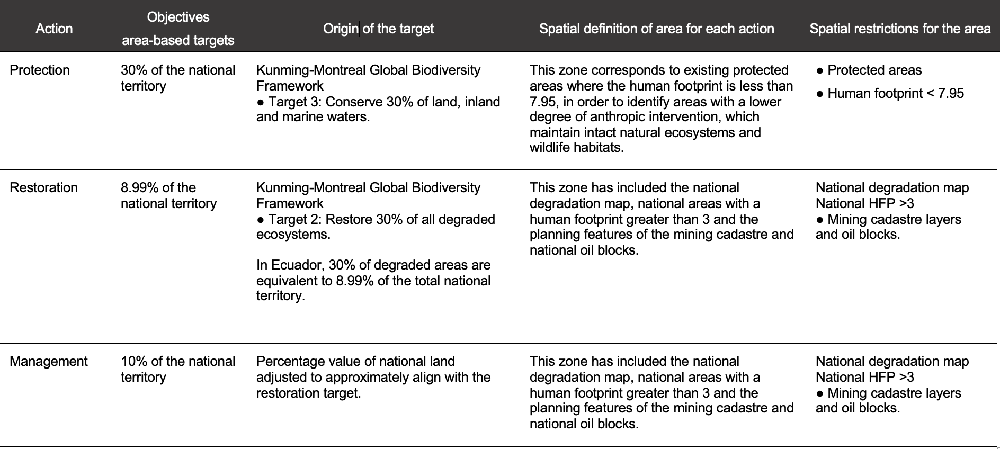

2.4 Objetivos
Esta sección de la herramienta web de priorización espacial para identificar áreas prioritarias que apoyen la implementación del MMB le permite establecer objetivos basados en áreas para protección, restauración y gestión. Los objetivos también pueden entenderse como el porcentaje del territorio que puede asignarse a cada acción dentro del país. Los valores predeterminados en la herramienta web Prioritizing Nature se derivan de los objetivos del MMB en Ecuador (véase Tabla 1).
Pasos
Introduzca cualquier valor mayor o igual a 0,001 para los objetivos de protección, restauración y gestión. La suma de los valores de todos los objetivos puede ser menor o igual al 100 %, pero no debe exceder el 100 %.
Importante
Actualmente, aproximadamente el 63,07 % de Ecuador cuenta con cobertura potencial de OECM. Por lo tanto, si selecciona «bloquear potenciales OECM», el objetivo de protección aquí deberá ser al menos del 63,07 %.
Figura 4. Establecer objetivos
Las restricciones de bloqueo utilizadas en Ecuador para definir espacialmente dónde puede ocurrir cada una de estas acciones se resumen en la tabla siguiente.
Tabla 1. Acciones basadas en áreas y objetivos utilizados en el análisis de priorización espacial para apoyar los objetivos del MMB.